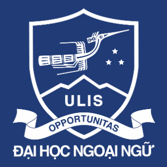

Trường Đại học Ngoại ngữ - ĐHQGHN
Nhập môn Công nghệ số và Ứng dụng Trí tuệ nhân tạoI. GIỚI THIỆU DỰ ÁN VÀ VAI TRÒ CÁ NHÂN
I. GIỚI THIỆU DỰ ÁN VÀ VAI TRÒ CÁ NHÂN
Trong khuôn khổ môn học Nhập môn Công nghệ số và Trí tuệ nhân tạo, nhóm gồm 5 thành viên đã thực hiện dự án nhỏ với chủ đề: "Xây dựng bộ tài liệu hướng dẫn sử dụng AI trong học tập cho sinh viên năm nhất". Dự án diễn ra trong vòng 1 tuần (từ ngày 09/06 đến 14/06/2025).
Trong nhóm, tôi đảm nhận vai trò Trưởng nhóm kiêm người phụ trách tổng hợp nội dung. Cụ thể, tôi chịu trách nhiệm:
Thiết lập và quản lý bảng công việc nhóm trên Trello
Tổng hợp và định dạng báo cáo chung trên Google Docs
Quản lý toàn bộ tệp tin của dự án trên Google Drive
Điều phối thảo luận và thông báo nhóm qua Discord
II. CÔNG CỤ HỢP TÁC ĐÃ SỬ DỤNG
Tôi đã thiết lập và sử dụng 4 công cụ thuộc 4 nhóm khác nhau theo yêu cầu của bài tập. Bảng dưới đây tóm tắt tổng quan:
| Công cụ | Nhóm | Tính năng sử dụng | Mức đạt |
|---|---|---|---|
| Trello | Quản lý dự án | Tạo card, gán deadline, dùng label màu | Mức 4 |
| Google Docs | Soạn thảo cộng tác | Viết báo cáo nhóm, comment góp ý | Mức 4 |
| Google Drive | Lưu trữ & chia sẻ tệp | Tổ chức thư mục 3 cấp, phân quyền | Mức 4 |
| Discord | Giao tiếp nhóm | Tạo channel riêng, ghim thông báo | Mức 4 |
2.1. Trello – Quản lý dự án
Tôi tạo board "DA-NhomCNTT-T5-2026" với 4 cột: Backlog, To Do, In Progress và Done. Mỗi nhiệm vụ được tạo thành một card riêng, trong đó ghi rõ:
Người phụ trách
Deadline cụ thể (dùng tính năng Due Date)
Label màu theo loại công việc: đỏ = khẩn cấp, xanh = nội dung, vàng = kiểm tra
Tôi cập nhật tiến độ trung bình 4 lần/tuần (sáng thứ Hai, thứ Tư, thứ Sáu và Chủ nhật), di chuyển card giữa các cột để cả nhóm nắm được trạng thái thực tế.
2.2. Google Docs – Soạn thảo cộng tác
Nhóm sử dụng Google Docs để viết chung tài liệu hướng dẫn. Tôi đóng vai trò người tổng hợp chính: định dạng heading, tạo mục lục tự động và review từng phần của thành viên bằng tính năng Comment & Suggestion.
Tổng số lần chỉnh sửa của tôi: 23 lần (xem lịch sử phiên bản)
Tổng số comment tôi để lại: 11 comment góp ý nội dung
Tôi đề xuất (Suggest Mode) thay đổi 3 đoạn văn sai cấu trúc
2.3. Google Drive – Lưu trữ & quản lý tệp tin
Tôi tạo cấu trúc thư mục 3 cấp trên Google Drive, đặt tên theo quy chuẩn thống nhất:
Cấp 1: DA-HuongDan-AI-NhomCNTT
Cấp 2: 01_Tai Lieu Tham Khao / 02_Noi Dung Chinh / 03_Anh-Minh Chung / 04_Bao Cao Ca Nhan
Cấp 3 (ví dụ): 02_NoiDung-Chinh → 2026-06-Bao Cao-Nhom-v1.docx
Tất cả 18 tệp trong thư mục được đặt tên theo mẫu: YYYY-MM-[LoaiFile]-[TenNgan]-[Version].
2.4. Discord – Giao tiếp nhóm
Tôi tạo server Discord riêng cho nhóm với 4 channel: #thong-bao, #thao-luan-noi-dung, #chia-se-tai-lieu, #off-topic. Mỗi deadline hoặc link tài liệu đều được ghim (pin) trong channel tương ứng.
Tổng lượt nhắn tin của tôi trong tuần: 47 tin nhắn
Tôi chủ động nhắc nhở tiến độ cho 2 thành viên chậm deadline
Tôi tổ chức 1 buổi voice call nhóm (60 phút) để review bản thảo
III. THÁCH THỨC VÀ GIẢI PHÁP
Trong quá trình sử dụng các công cụ cộng tác, tôi gặp phải 3 thách thức chính. Bảng dưới đây trình bày chi tiết từng vấn đề và cách tôi giải quyết:
| STT | Thách thức | Mô tả cụ thể | Giải pháp thực tế |
|---|---|---|---|
| 1 | Xung đột phiên bản file | Hai thành viên cùng chỉnh sửa một file Word offline rồi gửi qua Zalo, dẫn đến mâu thuẫn nội dung. | Chuyển toàn bộ soạn thảo sang Google Docs – tính năng chỉnh sửa đồng thời giải quyết triệt để vấn đề. |
| 2 | Thông tin bị 'chìm' trong chat nhóm | Tin nhắn quan trọng (deadline, link tài liệu) bị cuốn theo hàng trăm tin nhắn khác trên Zalo. | Tạo channel riêng #thong-bao trên Discord và ghim (pin) tất cả thông tin quan trọng. |
| 3 | Khó theo dõi tiến độ cá nhân | Mỗi người tự nhớ công việc của mình, không có cái nhìn tổng quan cho cả nhóm. | Sử dụng Trello với board Kanban: cột To Do / In Progress / Done; mỗi card gán tên và deadline rõ ràng. |
Nhìn chung, mỗi thách thức đều giúp tôi nhận ra rằng việc lựa chọn đúng công cụ và thiết lập quy ước làm việc từ đầu là yếu tố then chốt để dự án nhóm vận hành trơn tru. Đặc biệt, việc chuyển từ công cụ quen thuộc (Zalo + Word) sang nền tảng chuyên biệt (Discord + Google Docs) đòi hỏi cả nhóm phải có thời gian thích nghi, nhưng kết quả đạt được rõ ràng hiệu quả hơn nhiều.
IV. PHÂN TÍCH HIỆU QUẢ CÔNG CỤ
Sau 1 tuần sử dụng thực tế, tôi nhận thấy mỗi công cụ mang lại giá trị khác nhau đối với cá nhân:
Trello
Công cụ hiệu quả nhất đối với tôi với tư cách trưởng nhóm. Tính năng visual board giúp tôi nắm bắt tiến độ toàn nhóm chỉ trong vài giây. Hạn chế: phiên bản miễn phí giới hạn số lượng Power-Up (tích hợp bên thứ 3).
Google Docs
Giải quyết triệt để vấn đề xung đột phiên bản. Tính năng Suggestion Mode đặc biệt hữu ích khi cần góp ý mà không làm mất nội dung gốc. Hạn chế: cần kết nối internet ổn định.
Google Drive
Việc tổ chức thư mục có hệ thống giúp cả nhóm tìm file nhanh hơn đáng kể so với việc gửi tệp qua chat. Hạn chế: dung lượng miễn phí 15GB chia sẻ giữa tất cả dịch vụ Google.
Discord
Channel riêng theo chủ đề giúp thông tin không bị lẫn lộn. Tính năng ghim (pin) tin nhắn rất tiện để lưu deadline. Hạn chế: một số thành viên ban đầu không quen, cần thời gian hướng dẫn.
V. KẾT LUẬN
Qua bài tập này, tôi đã tự thiết lập và vận hành thành thạo 4 công cụ hợp tác trực tuyến thuộc 4 nhóm khác nhau. Từ việc chỉ quen với việc gửi file qua Zalo, tôi đã chuyển sang một quy trình làm việc chuyên nghiệp hơn, trong đó mỗi công cụ phục vụ một mục đích riêng biệt và rõ ràng.
Quan trọng hơn, tôi nhận ra rằng công nghệ số không chỉ giúp công việc nhanh hơn, mà còn giúp minh bạch hóa trách nhiệm của từng thành viên – điều mà các nhóm sinh viên thường thiếu. Đây là kỹ năng tôi sẽ tiếp tục phát triển và áp dụng trong các môn học và dự án tiếp theo.